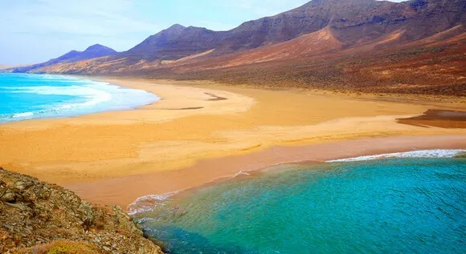
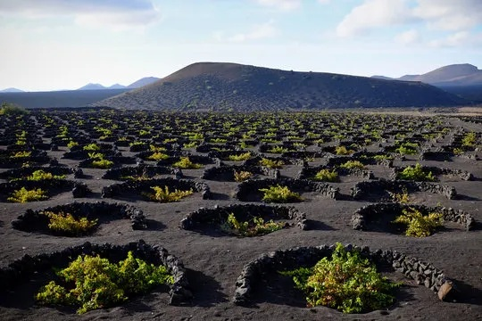
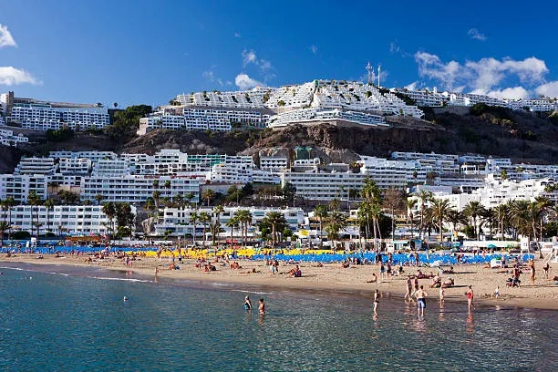
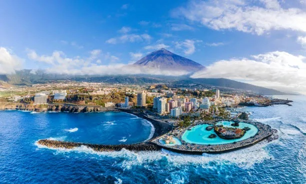
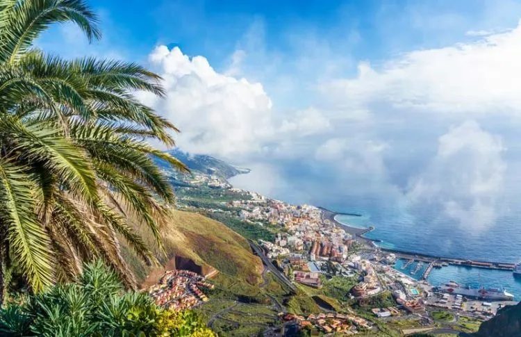
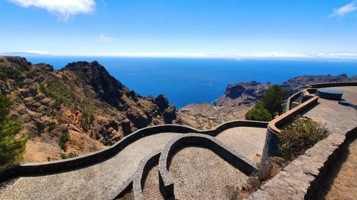
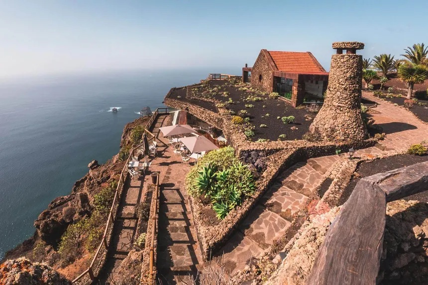
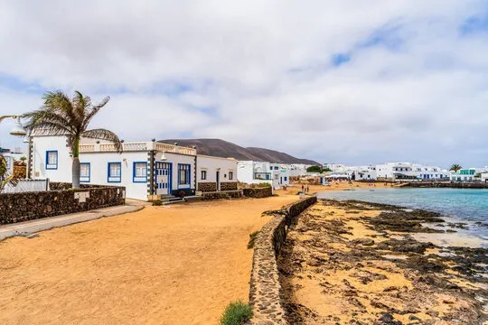

Canarias
se vive fuera.
Playas, pueblos, comida, paisajes y lugares que merecen una escapada. Descubre qué hacer en cada rincón de las islas.
Ocho islas. Miles de formas de disfrutarlas.
Canarias tiene mucho más que playas. Hay pueblos escondidos, volcanes, mercados, restaurantes, senderos, miradores y rincones que muchas veces pasan desapercibidos.
¿Dónde vamos?
Explora cada isla y descubre ideas para aprovecharla al máximo.

Fuerteventura
Playas, pueblos, gastronomía y naturaleza.

Lanzarote
Volcanes, playas y paisajes únicos.

Gran Canaria
Montaña, ciudad, playas y gastronomía.

Tenerife
El Teide, pueblos, costa y vida local.

La Palma
Bosques, volcanes y cielos increíbles.

La Gomera
Senderos, naturaleza y pueblos.

El Hierro
Tranquilidad, naturaleza y océano.

La Graciosa
Playas vírgenes y ritmo tranquilo.
¿Qué te apetece hacer?
Tu próxima escapada empieza aquí.
Explora las islas, encuentra un plan y descubre lugares que quizá todavía no conocías.
Explorar la guía →